120 of 1000 planned images, chosen for colour, variety and fidelity, at most 18 per category and 3 per search. Source left, plan right (60 columns, 8 Bambu PLA strip filaments, up to 3 grey backgrounds, at most 4 line patterns). Images from Wikimedia Commons; author and licence under each. Fidelity = mean CIELAB error at viewing distance (lower is better).
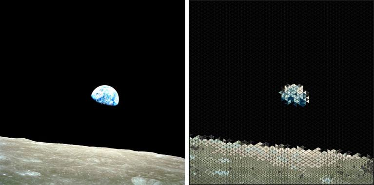
NASA-Apollo8-Dec24-Earthrise
60 x 52 triangles, 6300 cells, fidelity 1.36, 4 patterns
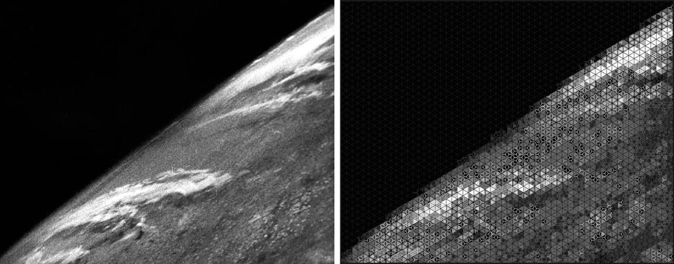
First photo from space
60 x 41 triangles, 4980 cells, fidelity 1.69, 4 patterns
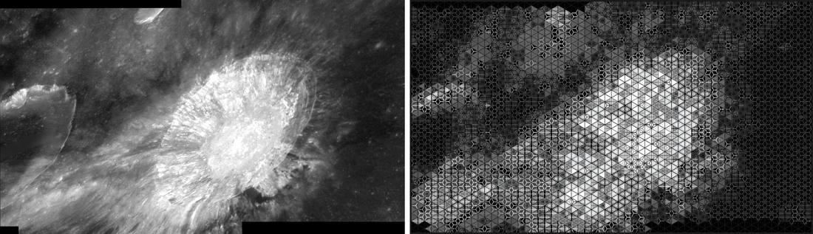
A Close-Up View of the Aristarchus Crater
60 x 30 triangles, 3660 cells, fidelity 1.93, 4 patterns
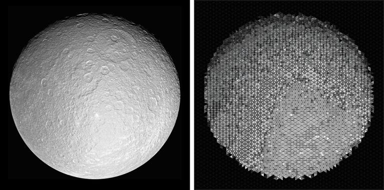
PIA07763 Rhea full globe5
60 x 52 triangles, 6300 cells, fidelity 2.04, 4 patterns
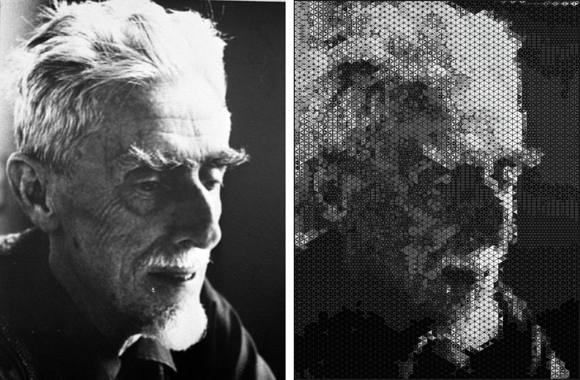
Maurits Cornelis Escher
60 x 69 triangles, 8340 cells, fidelity 2.7, 4 patterns
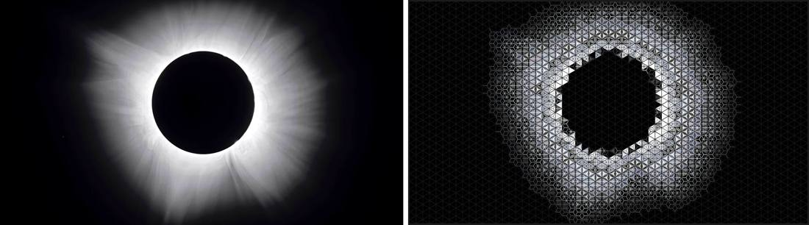
2024 Total Solar Eclipse Corona
60 x 29 triangles, 3540 cells, fidelity 2.8, 4 patterns
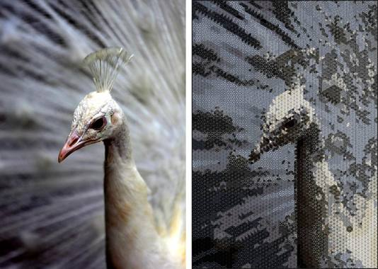
White Peacock, Palmitos Park, May 2018
60 x 75 triangles, 9060 cells, fidelity 3.36, 4 patterns
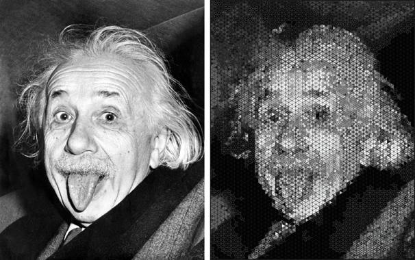
Albert Einstein sticks his tongue
60 x 66 triangles, 7980 cells, fidelity 3.46, 4 patterns
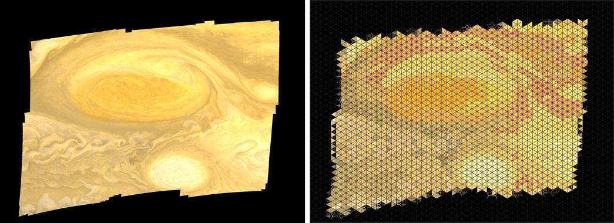
PIA00022 Jupiter Great Red Spot Mosaic
60 x 38 triangles, 4620 cells, fidelity 3.77, 4 patterns
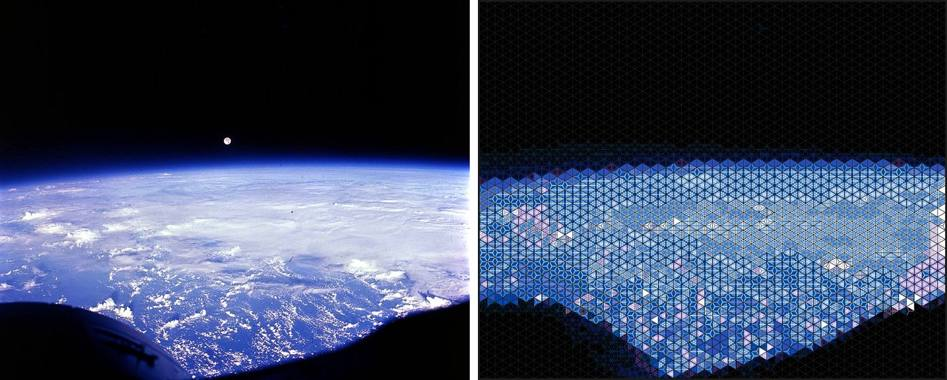
S65-63873 Clouds over the Western Pacific and the full Moon seen from Earth
60 x 42 triangles, 5100 cells, fidelity 4.21, 4 patterns
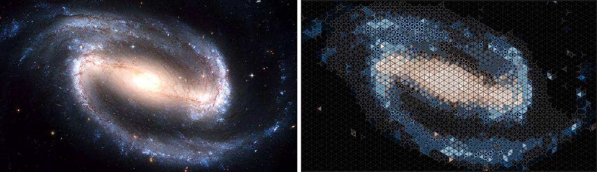
Hubble2005-01-barred-spiral-galaxy-NGC1300
60 x 30 triangles, 3660 cells, fidelity 4.24, 4 patterns
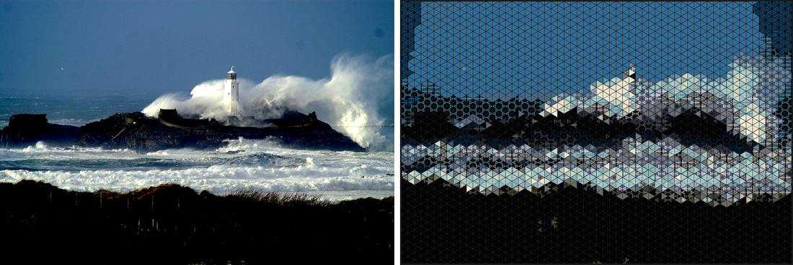
Godrevy Island Storm Imogen 2017
60 x 35 triangles, 4260 cells, fidelity 4.26, 4 patterns
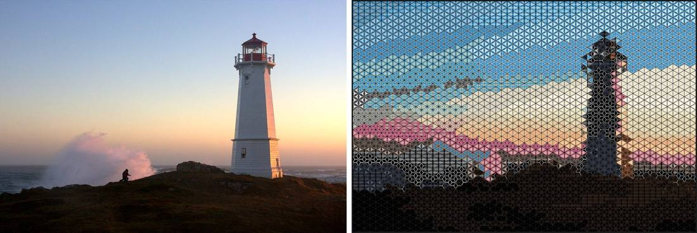
Louisbourg Lighthouse, waves breaking in a fall storm 3
60 x 35 triangles, 4260 cells, fidelity 4.38, 4 patterns
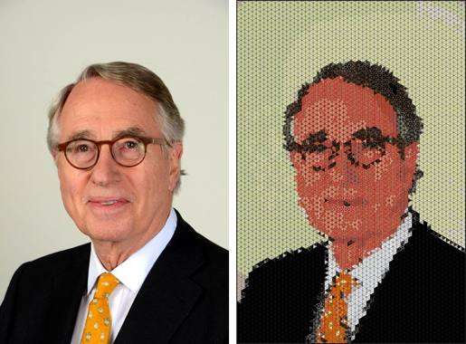
Wolf Klintz MEP 01
60 x 78 triangles, 9420 cells, fidelity 4.46, 4 patterns
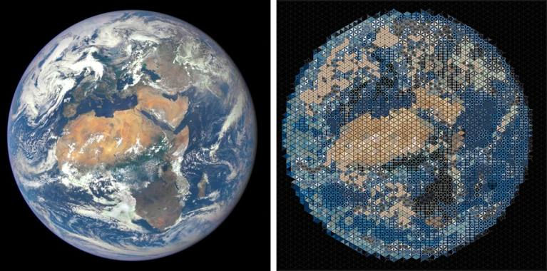
Africa and Europe from a Million Miles Away
60 x 52 triangles, 6300 cells, fidelity 4.54, 4 patterns
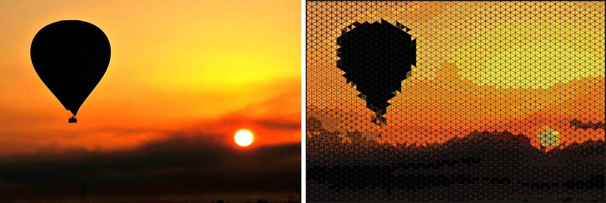
Balloon over Luxor - Egypt denoised
60 x 35 triangles, 4260 cells, fidelity 4.57, 4 patterns
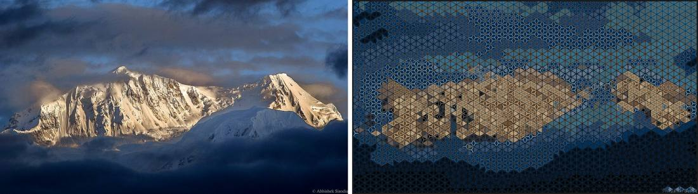
Kabru South Peak (122045721)
60 x 29 triangles, 3540 cells, fidelity 4.65, 4 patterns
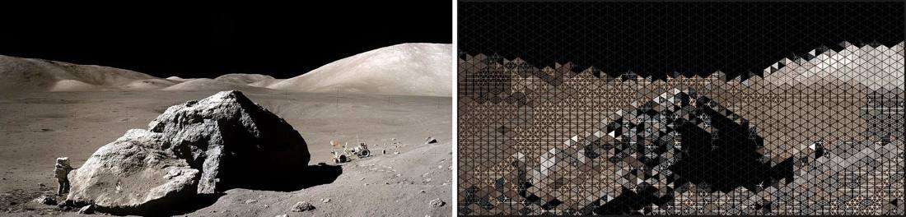
Apollo 17 Harrison H. Schmitt and Tracy's Rock - AS17-140-21493+AS17-140-21497 2
60 x 25 triangles, 3060 cells, fidelity 4.69, 4 patterns
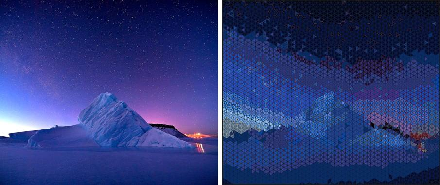
Iceberg in North Star Bay, Greenland
60 x 44 triangles, 5340 cells, fidelity 4.71, 4 patterns
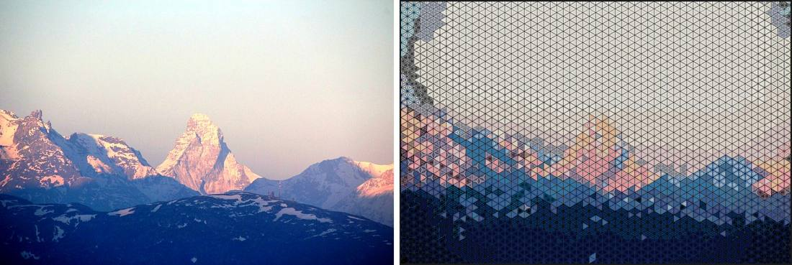
Matterhorn at sunrise
60 x 35 triangles, 4260 cells, fidelity 5.07, 4 patterns
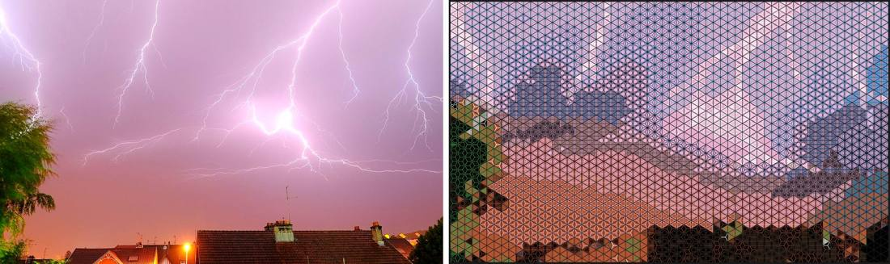
2013-08-07 04-23-26-foudre-belfort
60 x 31 triangles, 3780 cells, fidelity 5.12, 4 patterns
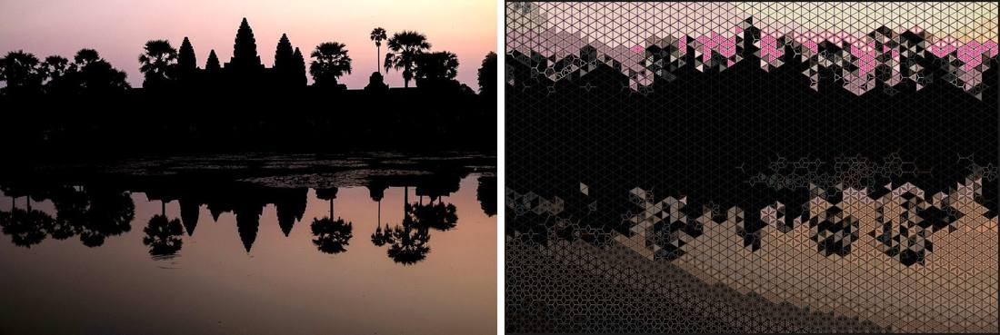
Sunrise at Angkor Wat Cambodia
60 x 35 triangles, 4260 cells, fidelity 5.16, 4 patterns
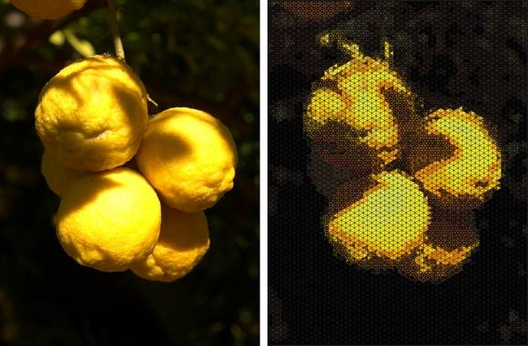
Citrus x limon (Outjo)
60 x 69 triangles, 8340 cells, fidelity 5.71, 4 patterns
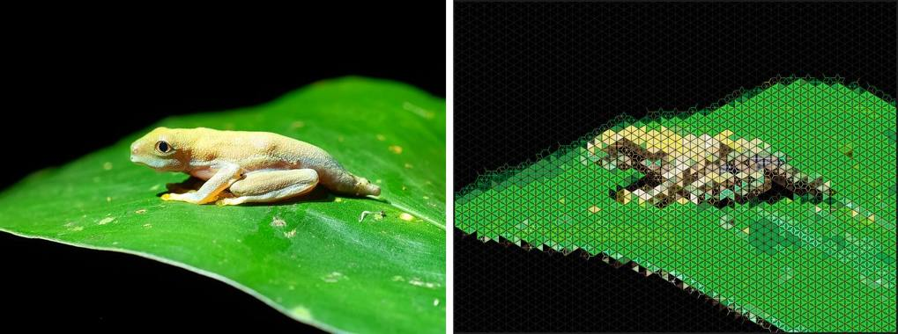
Red-eyed tree froglet (03337)
60 x 39 triangles, 4740 cells, fidelity 5.76, 4 patterns
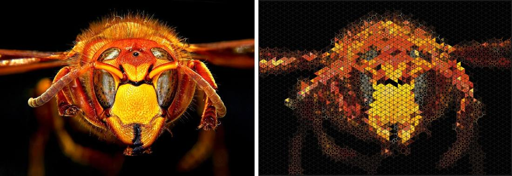
Vespa crabro head 01
60 x 36 triangles, 4380 cells, fidelity 6.09, 4 patterns
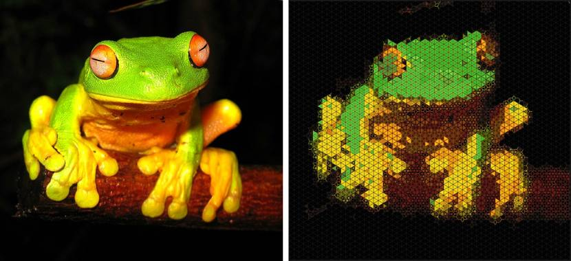
Red-eyed Tree Frog - Litoria chloris edit1
60 x 48 triangles, 5820 cells, fidelity 6.1, 4 patterns
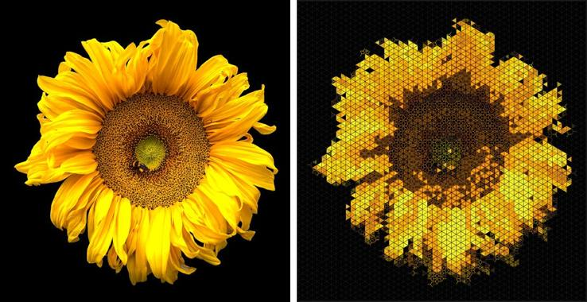
Sunflower and a bee
60 x 54 triangles, 6540 cells, fidelity 6.11, 4 patterns
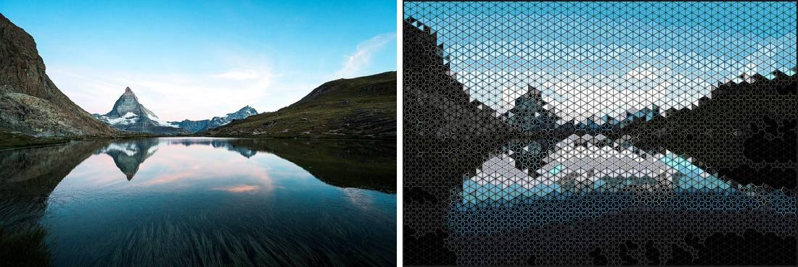
Matterhorn reflection in the Riffelsee at sunrise
60 x 35 triangles, 4260 cells, fidelity 6.19, 4 patterns
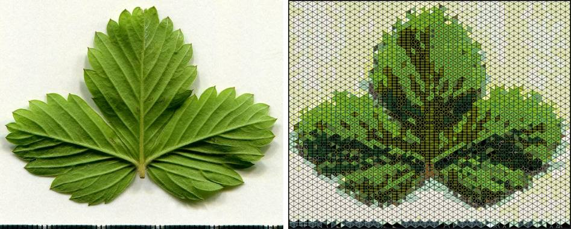
2020. Herbarium. Fragaria vesca. img-010
60 x 42 triangles, 5100 cells, fidelity 6.22, 4 patterns
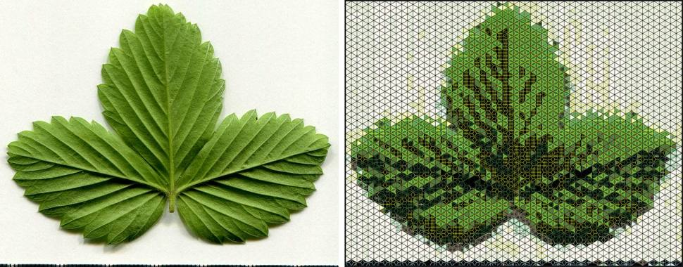
2020. Herbarium. Fragaria vesca. img-008
60 x 41 triangles, 4980 cells, fidelity 6.25, 4 patterns
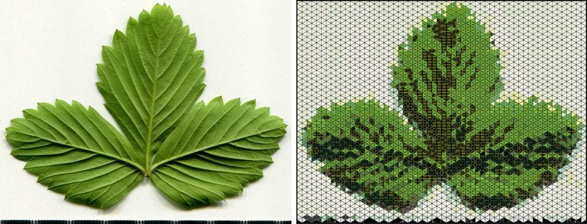
2020. Herbarium. Fragaria vesca. img-006
60 x 40 triangles, 4860 cells, fidelity 6.28, 4 patterns
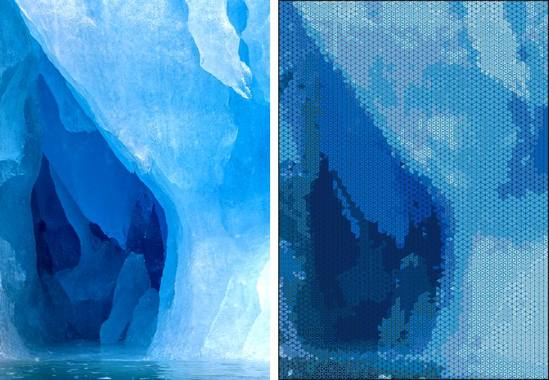
A look inside an iceberg (1), Liefdefjord, Svalbard
60 x 73 triangles, 8820 cells, fidelity 6.41, 4 patterns
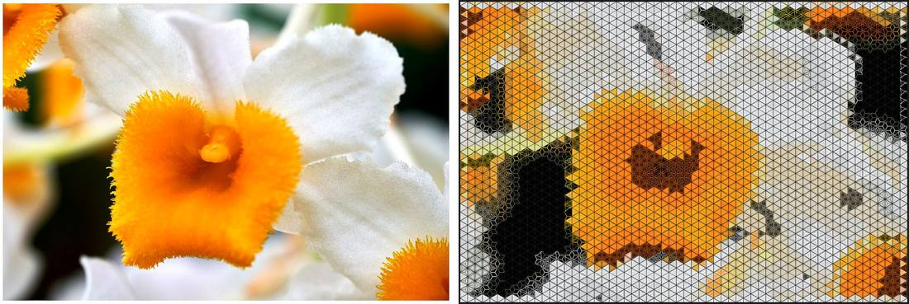
Closeup of Dendrobium thyrsiflorum (50511023341)
60 x 35 triangles, 4260 cells, fidelity 6.52, 4 patterns
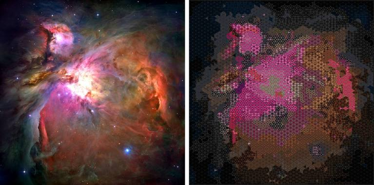
Orion Nebula - Hubble 2006 mosaic 18000
60 x 52 triangles, 6300 cells, fidelity 6.59, 4 patterns
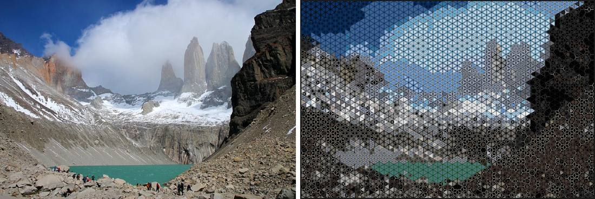
Parque nacional Torres del Paine, 2019 0467
60 x 35 triangles, 4260 cells, fidelity 6.65, 4 patterns
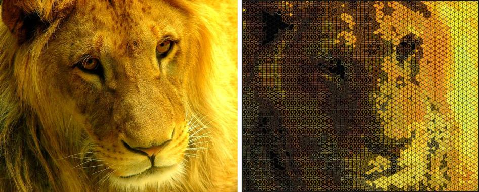
Male lion olomouc
60 x 42 triangles, 5100 cells, fidelity 6.68, 4 patterns
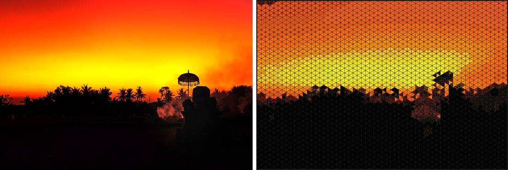
Silhouette of palm trees at tropical sunset on Bali island. (44817340244)
60 x 35 triangles, 4260 cells, fidelity 6.72, 4 patterns
Artem Beliaikin from Moscow, Russia ·
CC0 ·
source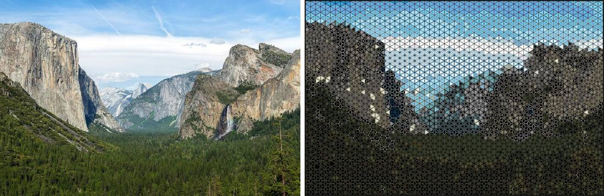
Tunnel View, Yosemite Valley, Yosemite NP - Diliff
60 x 34 triangles, 4140 cells, fidelity 6.75, 4 patterns
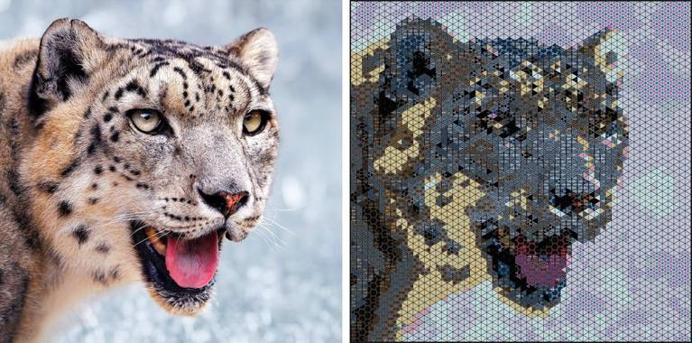
Snow leopard portrait-2010-07-09
60 x 52 triangles, 6300 cells, fidelity 6.8, 4 patterns
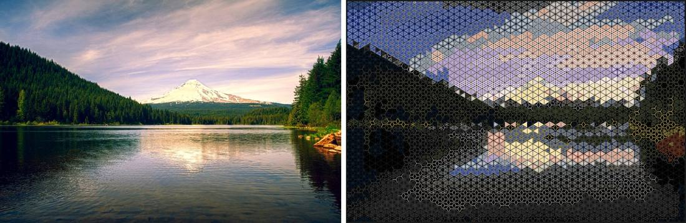
Mt Hood Lake View (HDR) (7182025447)
60 x 34 triangles, 4140 cells, fidelity 6.84, 4 patterns
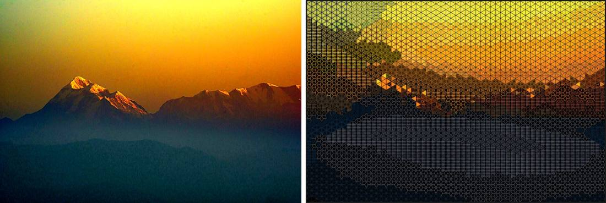
ASP 9918-copy
60 x 35 triangles, 4260 cells, fidelity 6.89, 4 patterns
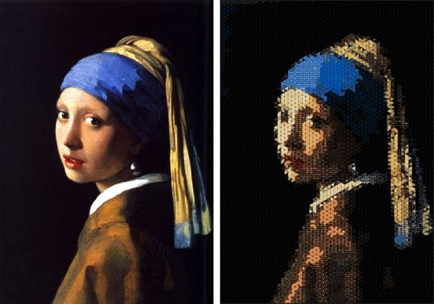
Johannes Vermeer (1632-1675) - The Girl With The Pearl Earring (1665)
60 x 74 triangles, 8940 cells, fidelity 6.97, 4 patterns
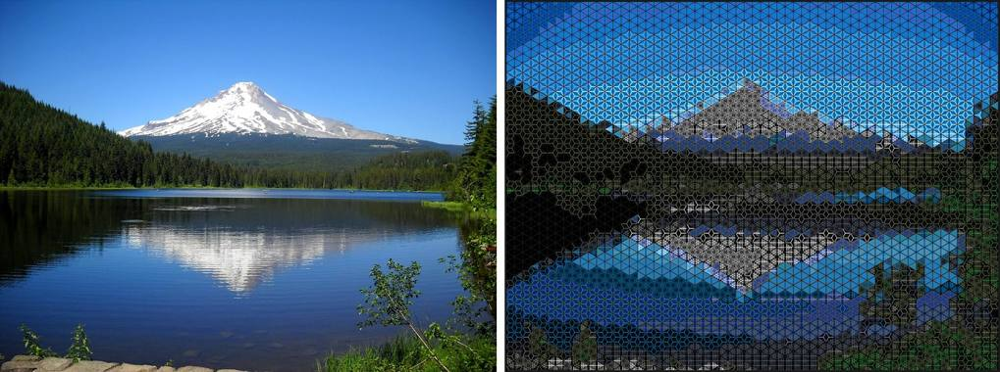
Mount Hood in Trillium Lake
60 x 39 triangles, 4740 cells, fidelity 7.18, 4 patterns
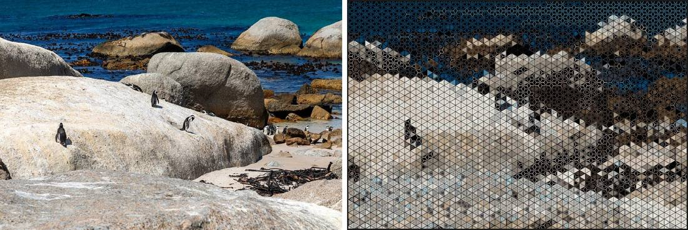
Simon’s Town (ZA), Boulders Beach, Penguin Colony -- 2024 -- 3401
60 x 35 triangles, 4260 cells, fidelity 7.19, 4 patterns
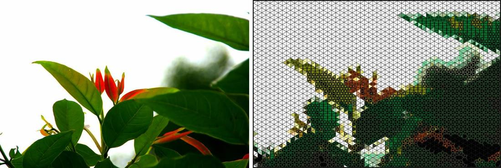
Eucalyptus deglupta 18zz
60 x 35 triangles, 4260 cells, fidelity 7.3, 4 patterns
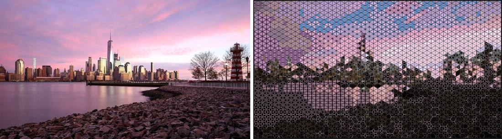
Lower Manhattan from Jersey City November 2016 002
60 x 29 triangles, 3540 cells, fidelity 7.39, 4 patterns
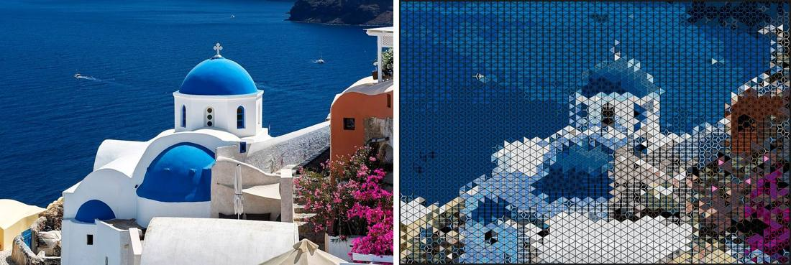
The island of Santorini, Greece
60 x 35 triangles, 4260 cells, fidelity 7.45, 4 patterns
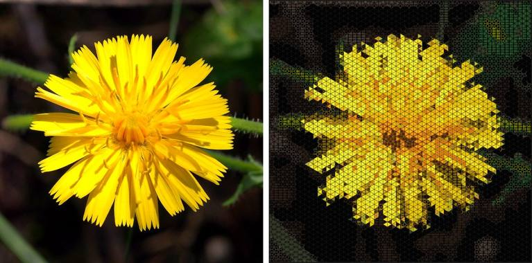
Crepidinae sp. (Slovenia)
60 x 52 triangles, 6300 cells, fidelity 7.46, 4 patterns
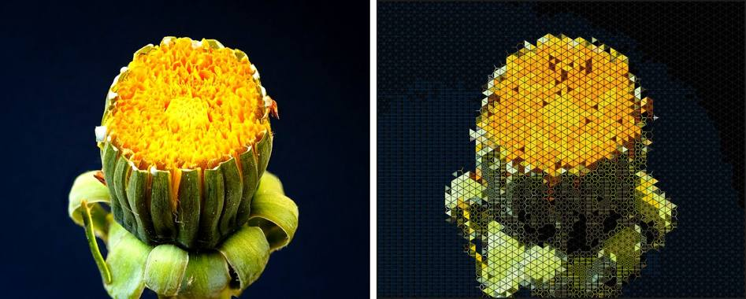
Dwarsdoorsnede van een gesloten bloem van een paardenbloem (Taraxacum officinale
60 x 42 triangles, 5100 cells, fidelity 7.53, 4 patterns
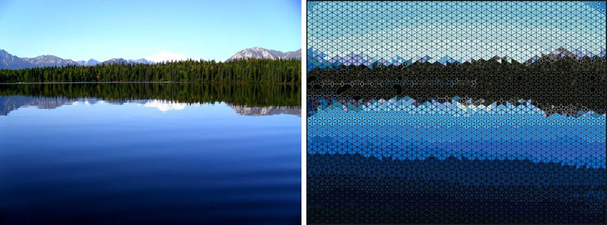
Denalibeyersflatcalm
60 x 39 triangles, 4740 cells, fidelity 7.55, 4 patterns
16 - Cherry Blossoms at Hommoku
60 x 75 triangles, 9060 cells, fidelity 7.6, 4 patterns
Matterhorn sunset 2016 (Unsplash)
60 x 35 triangles, 4260 cells, fidelity 7.67, 4 patterns
Simon’s Town (ZA), Boulders Beach, Penguin Colony -- 2024 -- 3420
60 x 35 triangles, 4260 cells, fidelity 7.69, 4 patterns
Agalychnis callidryas (eye detail)
60 x 69 triangles, 8340 cells, fidelity 7.7, 4 patterns
Orion Nebula in NIRCam long-wavelength channel
60 x 35 triangles, 4260 cells, fidelity 7.72, 4 patterns
Parque nacional Torres del Paine, 2019 0725
60 x 35 triangles, 4260 cells, fidelity 7.76, 4 patterns
The Forbidden City - View from Coal Hill
60 x 26 triangles, 3180 cells, fidelity 7.8, 4 patterns
Santorin (GR), Perissa, Kirche -Timios Stavros- -- 2017 -- 2518
60 x 78 triangles, 9420 cells, fidelity 7.86, 4 patterns
Mount Rainier with waterfall
60 x 69 triangles, 8340 cells, fidelity 7.87, 4 patterns
Milky Way over Desert - rework 07-2022 - Flickr - Frank-2.0
60 x 35 triangles, 4260 cells, fidelity 8.0, 4 patterns
Vintage Car Museum & Event Center May 2017 12 (1961 Chevrolet C-K)
60 x 35 triangles, 4260 cells, fidelity 8.04, 4 patterns
「名所江戸百景 よし原 日本堤」-“Nihon Embankment at Yoshiwara,” from the series One Hundred Fa
60 x 77 triangles, 9300 cells, fidelity 8.05, 4 patterns
A view towards Torres Del Paine
60 x 35 triangles, 4260 cells, fidelity 8.09, 4 patterns
Tower Bridge London Dusk Feb 2006
60 x 23 triangles, 2820 cells, fidelity 8.23, 4 patterns
Koi in a garden pond in Tuntorp 3
60 x 36 triangles, 4380 cells, fidelity 8.73, 4 patterns
De Zoeker LCD
60 x 33 triangles, 4020 cells, fidelity 8.78, 4 patterns
A view of Mt Fuji-cherry blossoms-Katsura River from downstream of Shinmei 2nd B
60 x 39 triangles, 4740 cells, fidelity 8.88, 4 patterns
Stampe SV.4 D-EBHL OTT 2013 02
60 x 29 triangles, 3540 cells, fidelity 8.98, 4 patterns
Taj Mahal in March 2004
60 x 43 triangles, 5220 cells, fidelity 9.0, 4 patterns
The underwater surface structures of an iceberg in Svalbard
60 x 29 triangles, 3540 cells, fidelity 9.05, 4 patterns
Juvenile Kaloula in a drop of water on a Sacred lotus leaf
60 x 35 triangles, 4260 cells, fidelity 9.1, 4 patterns
Alpsee - Hohenschwangau Castle - Alpenrose - Neuschwanstein Castle 01
60 x 25 triangles, 3060 cells, fidelity 9.3, 4 patterns
'The Scream', undated drawing Edvard Munch, Bergen Kunstmuseum
60 x 36 triangles, 4380 cells, fidelity 9.36, 4 patterns
Gondolas on Canal Grande, Venice (15454089631)
60 x 39 triangles, 4740 cells, fidelity 9.37, 4 patterns
Sunrise from Kausani, Almora, Uttarakhand, India
60 x 31 triangles, 3780 cells, fidelity 9.38, 4 patterns
Mountain gorilla (Gorilla beringei beringei) female 2
60 x 37 triangles, 4500 cells, fidelity 9.39, 4 patterns
Epipactis gigantea stream orchid close
60 x 37 triangles, 4500 cells, fidelity 9.62, 4 patterns
Three-story Pagoda of Joraku-ji Temple in autumn, Konan, Shiga
60 x 52 triangles, 6300 cells, fidelity 9.64, 4 patterns
Panda géant (Ailuropoda melanoleuca) (3)
60 x 35 triangles, 4260 cells, fidelity 9.67, 4 patterns
Ailuropoda melanoleuca (Panda géant) - 445
60 x 35 triangles, 4260 cells, fidelity 9.68, 4 patterns
George I (György) Rákóczi (1593-1648) - Rembrandt van Rijn & Jan Gillisz. van Vl
60 x 59 triangles, 7140 cells, fidelity 9.82, 4 patterns
Berlin - Jiao Qing - 2020
60 x 35 triangles, 4260 cells, fidelity 9.83, 4 patterns
Simon’s Town (ZA), Boulders Beach, Penguin Colony -- 2024 -- 3429
60 x 65 triangles, 7860 cells, fidelity 9.85, 4 patterns
2018 01 (Blue) - Chaouen
60 x 35 triangles, 4260 cells, fidelity 10.0, 4 patterns
Citrus flower 2019-06-13 09-54-06 (C)-PSD
60 x 39 triangles, 4740 cells, fidelity 10.09, 4 patterns
Kluang - waterfalls on Gunung Lambak May 2024 01
60 x 35 triangles, 4260 cells, fidelity 10.17, 4 patterns
Burj Khalifa Image
60 x 39 triangles, 4740 cells, fidelity 10.19, 4 patterns
Flamingo Visitor Center FL1
60 x 34 triangles, 4140 cells, fidelity 10.24, 4 patterns
Al Khazneh 02
60 x 40 triangles, 4860 cells, fidelity 10.26, 4 patterns
Yosemite Half Dome from Valley 2013
60 x 34 triangles, 4140 cells, fidelity 10.3, 4 patterns
Chelonia mydas is going for the air edit
60 x 39 triangles, 4740 cells, fidelity 10.43, 4 patterns
Arese Museo Storico Alfa Romeo 1976 NY Taxi 1
60 x 37 triangles, 4500 cells, fidelity 10.5, 4 patterns
Nelumbo nucifera-IMG 5613
60 x 52 triangles, 6300 cells, fidelity 10.52, 4 patterns
Platanthera cristata (16977581784)
60 x 72 triangles, 8700 cells, fidelity 10.53, 4 patterns
Lotus flower (978659)
60 x 35 triangles, 4260 cells, fidelity 10.64, 4 patterns
Henri Rousseau - The Waterfall - Google Art Project
60 x 40 triangles, 4860 cells, fidelity 10.78, 4 patterns
Castle Neuschwanstein
60 x 34 triangles, 4140 cells, fidelity 10.83, 4 patterns
Ōhashi Atake no yūdachi-名所江戸百景 大はしあたけの夕立-Sudden Shower over Shin-Ōhashi Bridge a
60 x 76 triangles, 9180 cells, fidelity 10.87, 4 patterns
Ukiyo-e woodblock print by Katsushika Hokusai, digitally enhanced by rawpixel-co
60 x 36 triangles, 4380 cells, fidelity 10.89, 4 patterns
Gustav Klimt- Poljub
60 x 69 triangles, 8340 cells, fidelity 10.93, 4 patterns
Persian Miniature Paintings Wellcome L0045147
60 x 38 triangles, 4620 cells, fidelity 11.03, 4 patterns
The Sailing Ship Columbia
60 x 78 triangles, 9420 cells, fidelity 11.04, 4 patterns
De Hoop, Princenhage 2
60 x 58 triangles, 7020 cells, fidelity 11.13, 4 patterns
99 - Machu Picchu - Juin 2009.edit3
60 x 23 triangles, 2820 cells, fidelity 11.49, 4 patterns
「名所江戸百景 深川洲崎十万坪」-“Jūmantsubo Plain at Fukagawa Susaki,” from the series One Hund
60 x 78 triangles, 9420 cells, fidelity 11.5, 4 patterns
Three-storied Pagoda, Kiyomizu-dera 20211123
60 x 35 triangles, 4260 cells, fidelity 11.53, 4 patterns
Brooklyn Bridge Manhattan
60 x 35 triangles, 4260 cells, fidelity 11.6, 4 patterns
Five Lemons on lemon tree, Burj Bhalaike
60 x 69 triangles, 8340 cells, fidelity 11.66, 4 patterns
Hot air balloon IMGP0344a
60 x 64 triangles, 7740 cells, fidelity 11.95, 4 patterns
Fleur de pissenlit (Taraxacum)
60 x 35 triangles, 4260 cells, fidelity 12.0, 4 patterns
Dülmen, Hausdülmen, Blüten der Dülmener Rose -- 2025 -- 7535
60 x 52 triangles, 6300 cells, fidelity 12.05, 4 patterns
London MMB »1E6 Lightning
60 x 61 triangles, 7380 cells, fidelity 12.2, 4 patterns
Henri Rousseau - View of the Bridge of Sevres, with frame
60 x 43 triangles, 5220 cells, fidelity 12.3, 4 patterns
Stained Glass Coat of Arms dated 1674, Sforza Castle, Milan
60 x 33 triangles, 4020 cells, fidelity 12.36, 4 patterns
Inside of a hot air balloon
60 x 69 triangles, 8340 cells, fidelity 12.51, 4 patterns
Koi fish at the Hacienda Chorlavi (aa9361)
60 x 39 triangles, 4740 cells, fidelity 12.6, 4 patterns
Famous Waterfalls in Various Provinces, Yoro Falls, Mino
60 x 76 triangles, 9180 cells, fidelity 13.28, 4 patterns
Santorini 39
60 x 78 triangles, 9420 cells, fidelity 14.48, 4 patterns
Mt. Fuji framed by cherry blossoms - DPLA - 3cf87944c325cc6f50ab7b02fa020484
60 x 35 triangles, 4260 cells, fidelity 14.63, 4 patterns
Stained glass window Saint Elijah Orthodox church, Stara Pazova, Serbia
60 x 94 triangles, 11340 cells, fidelity 15.28, 4 patterns